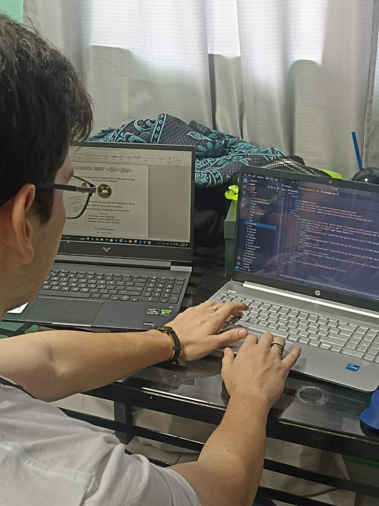

El propósito de esta aplicación es facilitar la documentación y seguimiento de registros anecdóticos en entornos educativos o profesionales, permitiendo un análisis profundo del desarrollo y comportamiento de los participantes.
Creadores
Javier Vera
Edad: 16 años

Brian Riquelme
Edad: 17 años

Eduardo Altamirano
Edad: 17 años